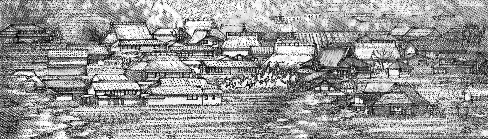
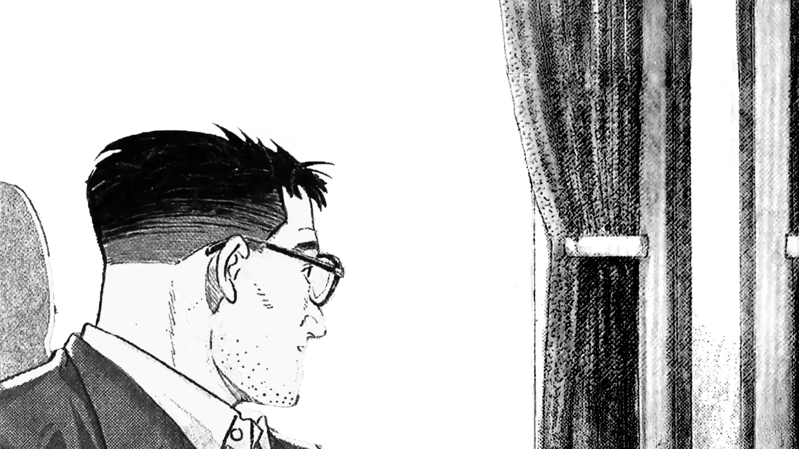
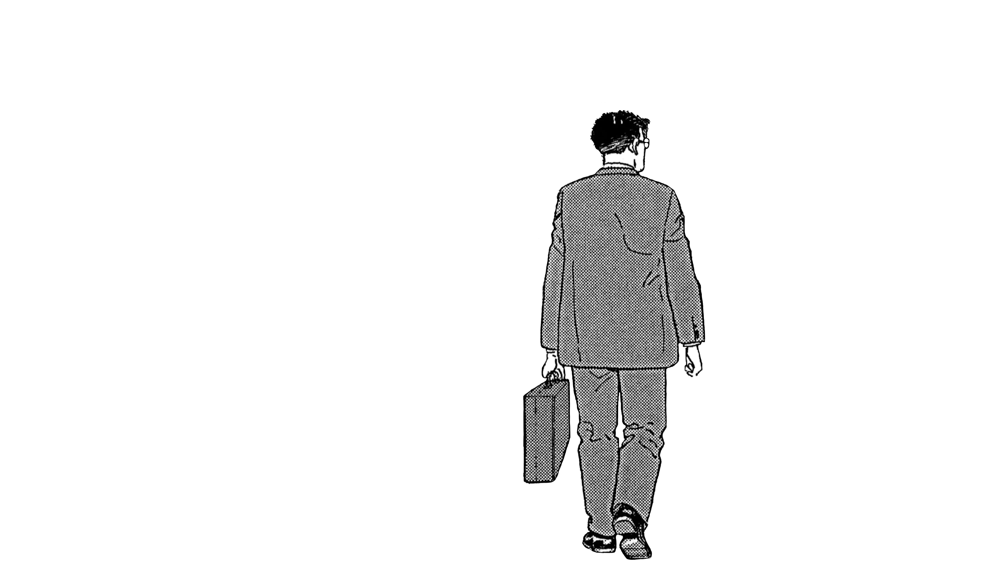
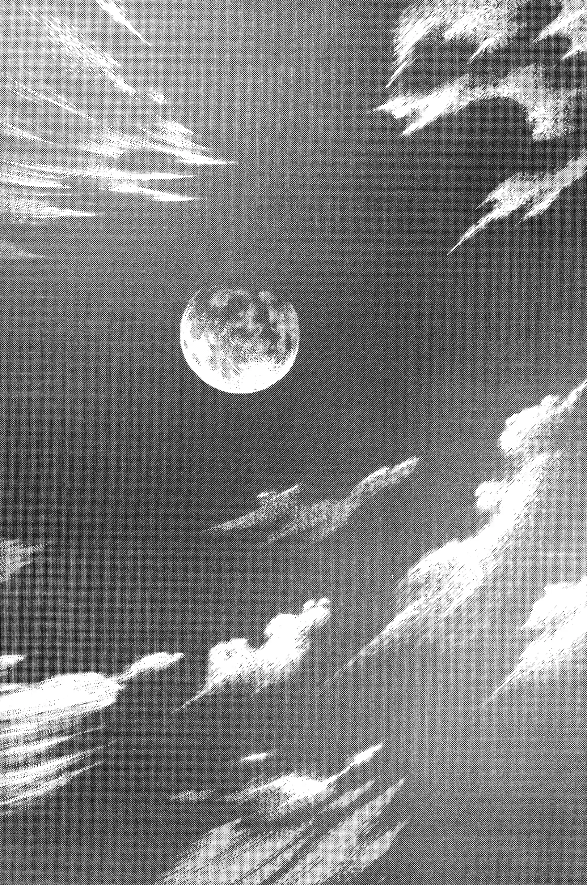
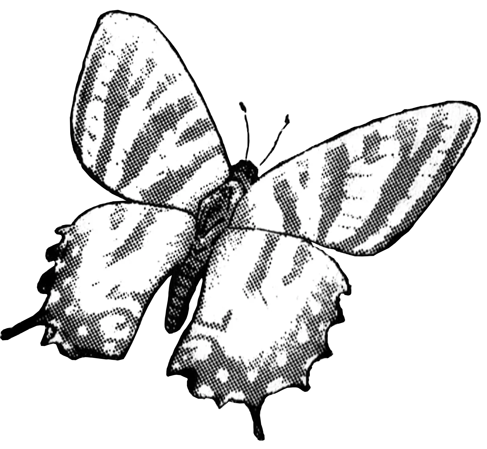
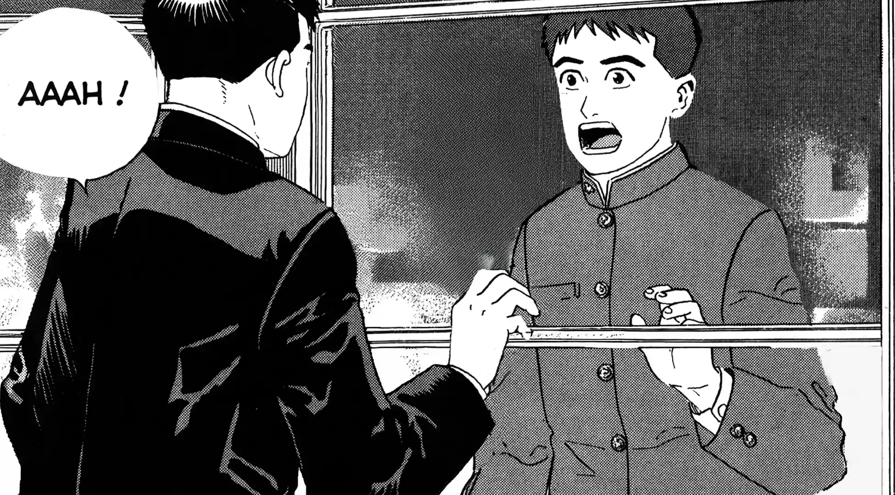
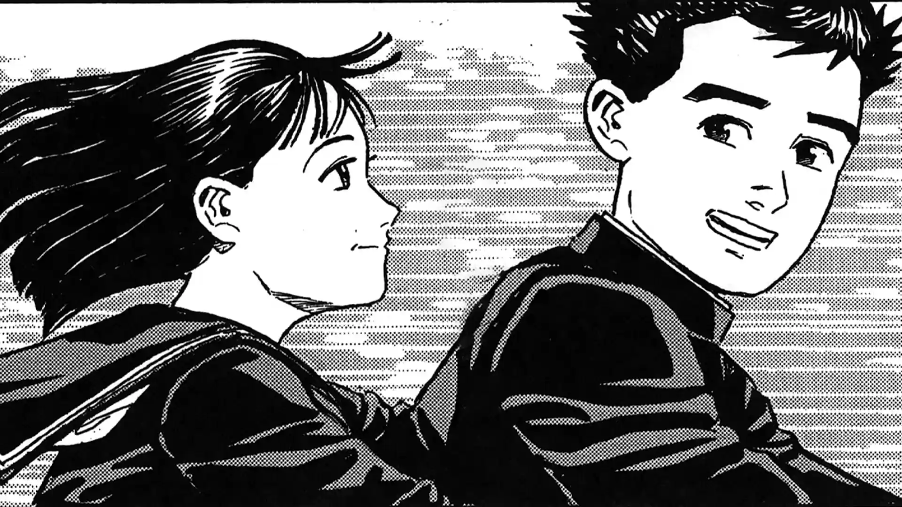
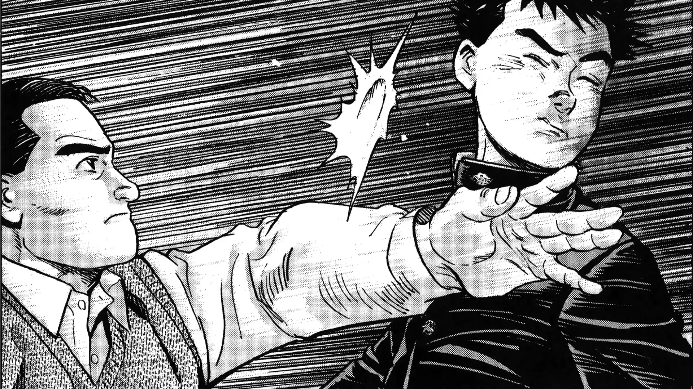
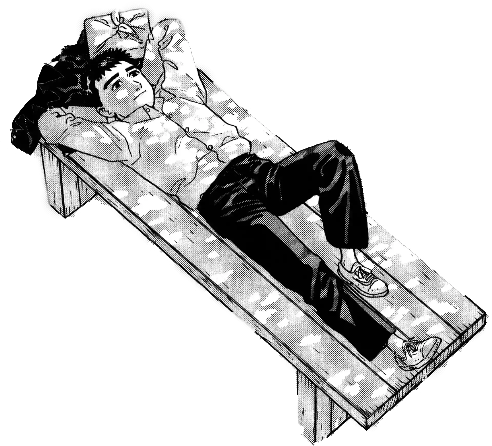

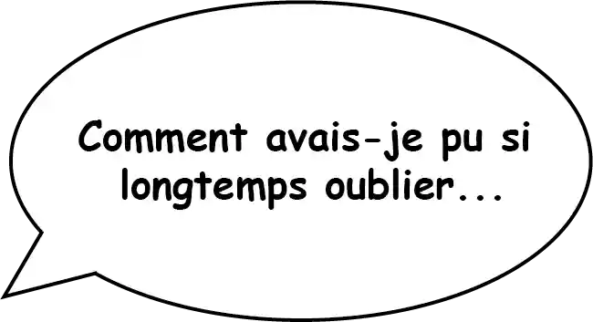
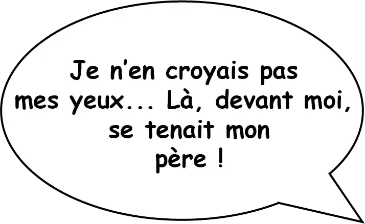
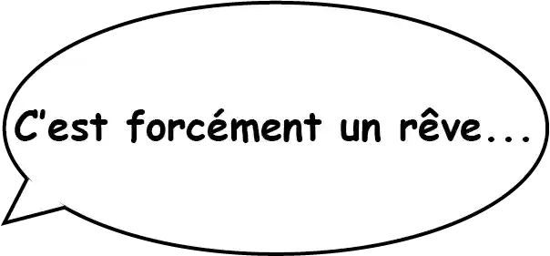
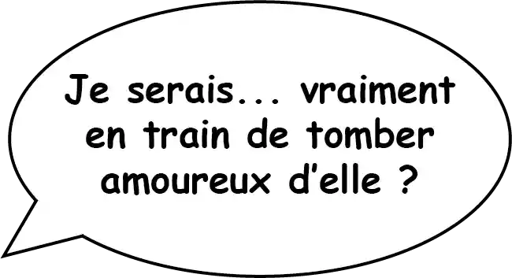
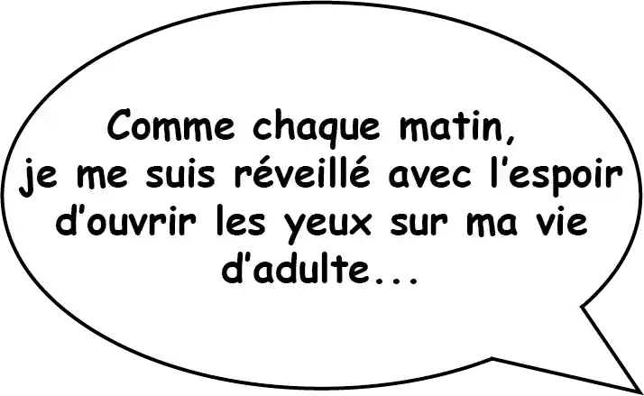
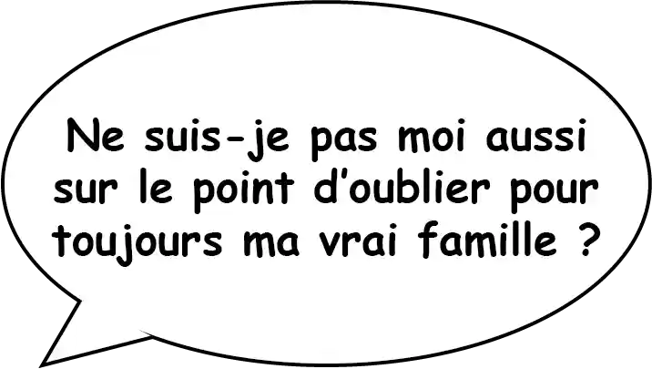
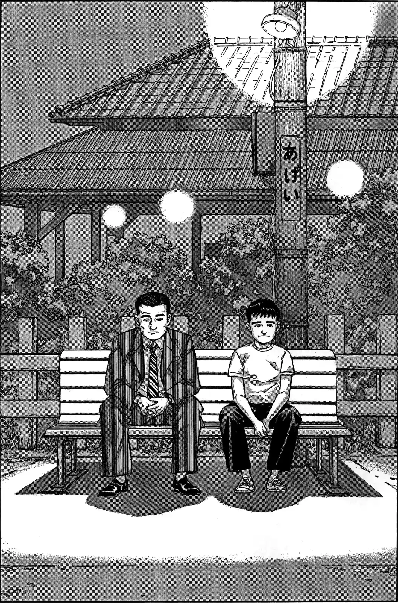
quartier lointain
Jirô Taniguchi
Hiroshi est un père de famille japonaise qui revit son enfance en interrogeant ses proches.
La disparition incompréhensible
de son père alors qu'il avait quatorze ans l'empêche de continuer sa propre vie
de façon sereine.